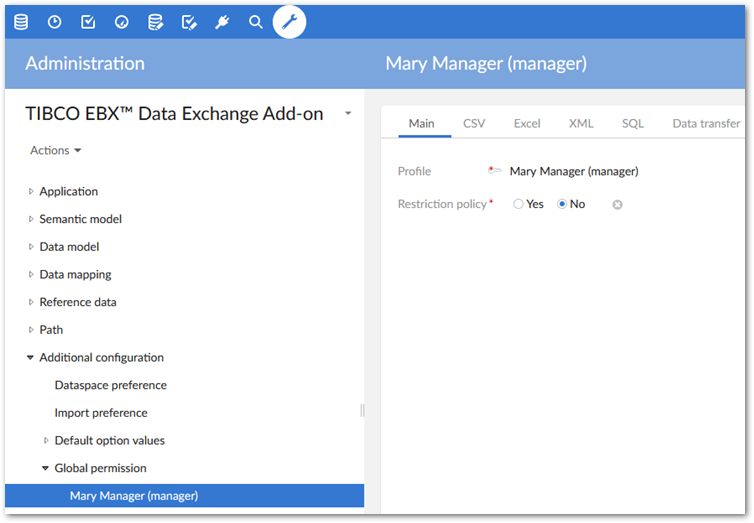
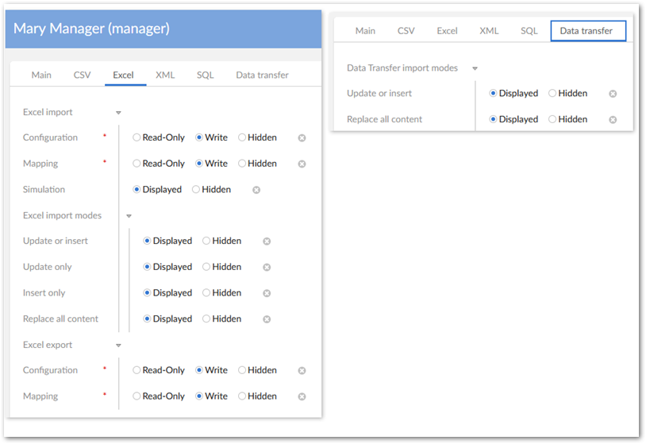

You can apply EBX® permissions to a profile, which is associated with either a user or a role. Each user can have multiple roles, and each role can include multiple users. If more than one set of permissions is associated with the same profile, the Restrictive policy setting determines whether the least restrictive or most restrictive policy settings apply. The EBX® Data Exchange Add-on allows you to leverage EBX® behavior related to permissions and apply it to the act of exchanging data. Specifically, administrators can set permissions for users and roles that determine:
access and interaction with import and export screens. By default all users can access the Configuration, Mapping, and Simulation screens. Administrators can specify that these pages are read-only accessible, or hidden from specific user profiles.
the default mode or the modes users can choose when importing and transferring data. The modes determine whether an import or transfer operation updates, inserts, or deletes data in the target location.
To set import and export permissions:
Navigate to Administration > Integration > TIBCO EBX® Data Exchange Add-on > Additional configuration > Global permission and create a new record.
On the Main tab you specify which profile these configuration settings will apply to and whether this will be considered a restrictive policy. If the Restriction policy option is enabled, the settings in this configuration are applied wherever they are more restrictive than others.

Use the tabs to set permissions for each import, export and transfer format as follows:
Import: Determines what screens users can access during the import process. Additionally, you can specify what import modes users can apply when importing.
Export: Determines what screens users can view.
Transfer: Specifies the data transfer modes users can apply when transferring data.
